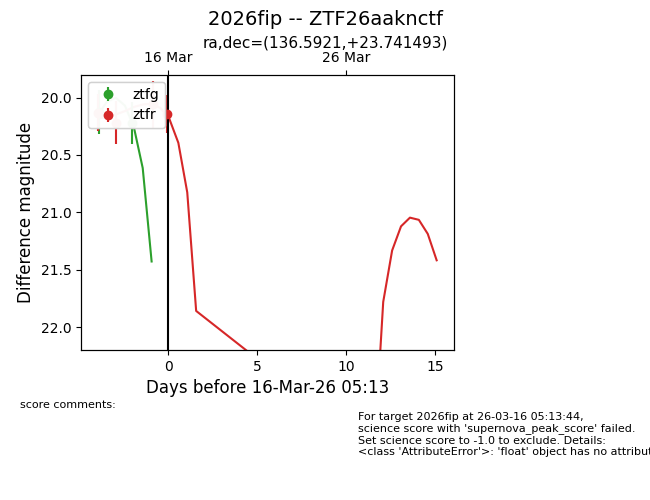
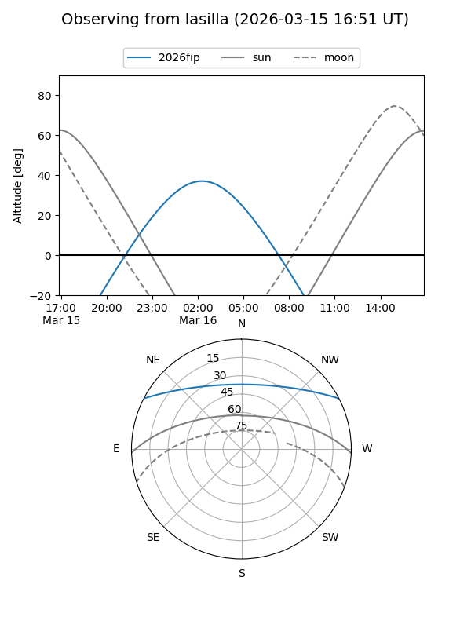
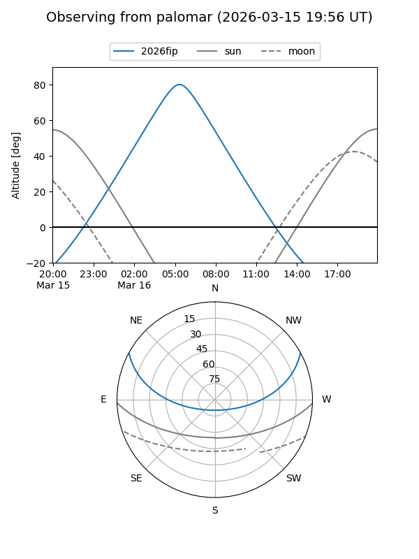
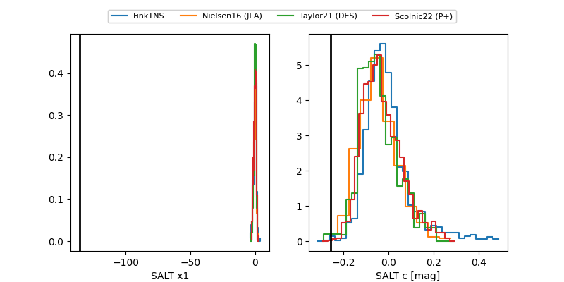

2026fip
Target 2026fip at 2026-03-16 05:15
Aliases and brokers:
FINK: link
Lasair: link
ALeRCE: link
TNS: link
YSE: link
alt names
ZTF26aaknctf (ztf,fink_ztf)
2026fip (tns,yse)
Coordinates:
equatorial (ra, dec) = 136.5921,+23.74149
equatorial (HMS+DMS) = 09:06:22.11,+23:44:29.38
galactic (l, b) = (203.4948,+39.49308)
Flags:
Photometry:
last ztfg=20.22, ztfr=20.14
2 ztfg, 4 ztfr detections
Lightcurve

Visibility


Additional plots
